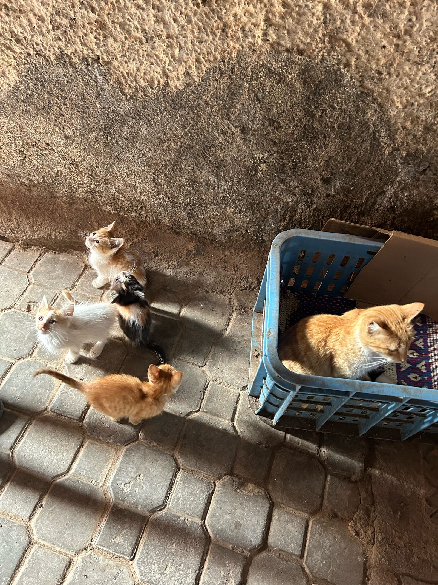
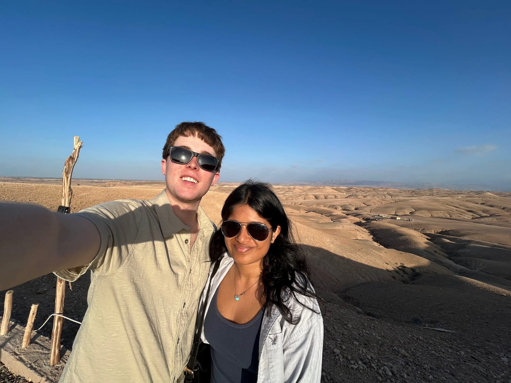
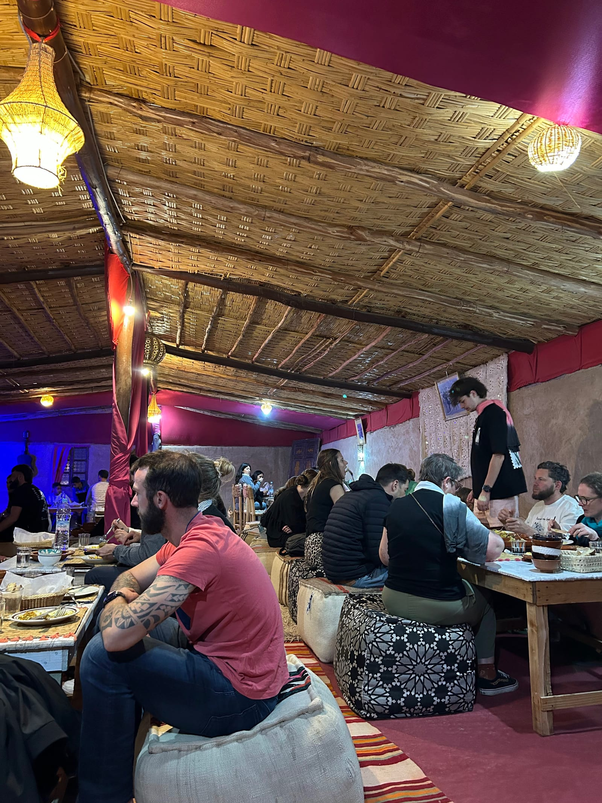
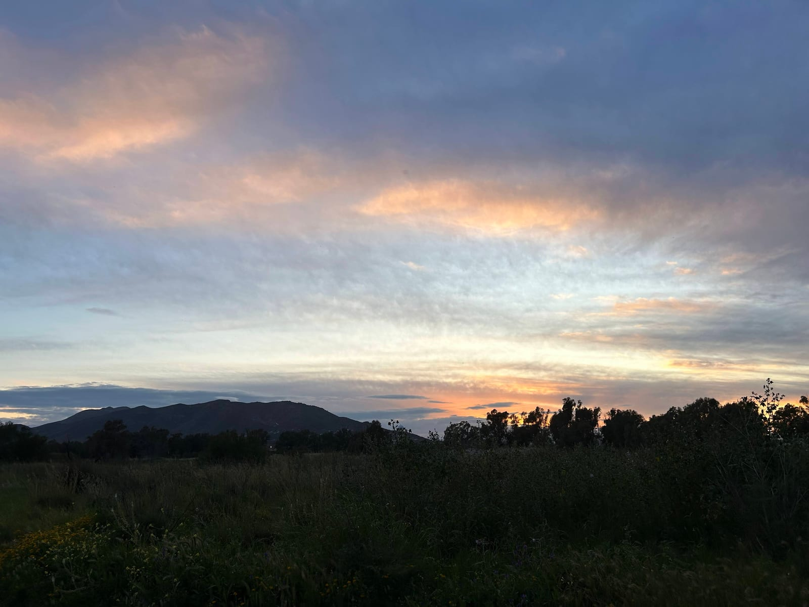

MOROCCO-MALAGA
Friday (Travel)
- We got back from Potsdam and grabbed some dinner quickly and left for the airport around 6:15 for our 8:50 flight
- Got to Marrakesh on time and had to go through a lengthier passport check than usual
- Checked in to the hostel riad but had to pay in cash
- He accepted euros and only charged us an extra 3% for the conversion
- Got to bed around 1:00 (3:00 Berlin time)
Saturday (Morocco)
- Woke up around 8:30 and left at 9:00

- Wandered around the city for 30 minutes, got cash, water, souvenirs, and met with our street food tour guide and group
-
1 / 5
- Food we tried: crepe/pancake (peanut butter and sweet, onion and spices), green tea with mint (they pour it from high above to show you are welcomed), nuts (cheese, caramelized, sesame, fennel), olives (sweet, spicy, salty, lemony), pharmacy (got samples and sniffs of all kinds of natural/organic medications, more tea), sandwiches (chicken, veggies, chili, cheese, all in a pocket), juice (avocado, banana, strawberry, apple, date, all layered together in one cup), fried sardines and aubergines)
- Bought a different juice at the market square
- They have cobras they play music for and pet monkeys walking around with people at the square
- Walked back and laid down for a while after all the food and walking
-
1 / 2
- Left a bit early and wandered around more before meeting our next tour guide at 3:30
- Drove to another one of those pharmacy places and got all the samples again with more tea
- Something happened with one of the guides or drivers and we ended up sitting there waiting to leave for like 30 min because our guide had to cover two groups now
- Drove to the "camels" and nice hill in the desert

- More tea
- They are one-humped rather than two and actually called dromedary and make up 94% of camels in the world
- Rode the camels around for maybe 15 minutes
-
1 / 3
- Mine would start walking diagonally and tipping side to side like it was drunk
- It also was very eager to keep going, always pushing and pulling to go forward
- Mahathi's would get really close to me
- The one behind her kept clearing it's throat or something it sounded weird
- Drove to dinner and fire show

- Dinner was alright, nothing amazing
- Oranges for dessert was cool
- More tea
- More tea
- Fire show was cool, he flung sparks really far, not near people though
- Headed back home and after an hour drive and 10 minute walk we were back
- Showered, packed, and slept at 11ish
Sunday (Malaga)
- Woke up at 6:00 and met our driver outside for our 8:55 flight
- He had video called me twice at 12:30 am for some reason and kept bugging me asking where we were and that he was waiting even though we were still early when we got to his car
- Marrakesh Airport checked our passports 5 separate times before getting on the flight and they didn't even check during boarding
- Left late at 9:15 and landed at 10:27
- Took a Bolt to our walking tour
-
1 / 3
- The city is much more historic than we thought, having been ruled by both Muslims and Romans in the last few thousand years
- We saw Antonio Banderas' apartment
- Ate at Vermuteria la Clasica
- Good tapas
- Ubered to our place to check in and change before heading to Guadalmar Beach
- Nice beach but the water was really cold
- Walked home and showered before dinner at Pizzeria Frascati
- Very nice employees and good pizza and pasta
- Went on a walk during the sunset, packed, and watched some TV before sleeping

Monday (Travel)
- Got up early at 4:00am and got in our scheduled 4:25 Uber to the airport for our 6:20 flight
- Watched the sunrise and saw a ton of the Alps on the flight
- Got back at 11:00 to get ready for class